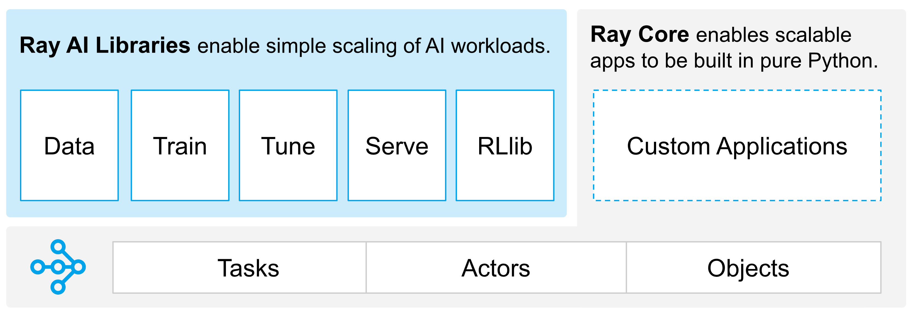

AI Engineering
Production AI systems, agents, RAG, MLOps, and reliability.
By Yangming Li
Ray is an open-source framework designed to simplify the development of large-scale machine learning (ML) and big data applications by providing a robust layer for parallel processing. This means it allows you to run multiple computations at the same time, making your programs faster and more efficient.

Ray helps you manage and preprocess large datasets efficiently. Here's an example from an e-commerce company processing customer data:
import ray
ray.init()
@ray.remote
def preprocess_chunk(data_chunk):
# Clean and transform data
cleaned_data = remove_nulls(data_chunk)
return cleaned_data
# Distribute preprocessing across cluster
data_chunks = split_data(large_customer_dataset)
futures = [preprocess_chunk.remote(chunk) for chunk in data_chunks]
results = ray.get(futures)
Code Explanation:
@ray.remote decorator marks the function for distributed executionpreprocess_chunk.remote() executes tasks asynchronouslyray.get() collects results from all workersFor a financial services company training a fraud detection model on millions of transactions:
from ray import train
import torch
def train_func(config):
model = FraudDetectionModel()
for epoch in range(config["epochs"]):
train.report({"loss": current_loss})
trainer = train.Trainer(backend="torch")
trainer.start()
results = trainer.run(
train_func,
config={"epochs": 10}
)
Code Explanation:
train.report() tracks metrics during trainingA healthcare company optimizing a diagnostic model:
from ray import tune
def train_model(config):
model = DiagnosticModel(
learning_rate=config["lr"],
hidden_size=config["hidden"]
)
# Training loop here
tune.report(accuracy=current_accuracy)
analysis = tune.run(
train_model,
config={
"lr": tune.loguniform(1e-4, 1e-1),
"hidden": tune.choice([128, 256, 512])
}
)
Code Explanation:
tune.loguniform() searches learning rate on log scaletune.choice() tests different network architecturestune.report() tracks metrics for optimizationA real-time recommendation system for a streaming service:
from ray import serve
@serve.deployment
class RecommendationModel:
def __init__(self):
self.model = load_trained_model()
async def __call__(self, request):
user_id = request.query_params["user_id"]
return self.model.get_recommendations(user_id)
serve.start()
RecommendationModel.deploy()
Code Explanation:
@serve.deployment decorator marks the class for deploymentserve.start() starts the Serve serverRecommendationModel.deploy() deploys the modelAn autonomous robotics company training a robot to navigate warehouses:
from ray.rllib.algorithms.ppo import PPO
config = {
"env": "WarehouseNav-v0",
"num_workers": 4,
"framework": "torch"
}
trainer = PPO(config=config)
for i in range(1000):
result = trainer.train()
print(f"Iteration {i}: reward = {result['episode_reward_mean']}")
Code Explanation:
PPO is a popular reinforcement learning algorithmconfig specifies the environment, number of workers, and frameworktrainer.train() trains the model for a specified number of iterationsFor more information about Ray and distributed computing for machine learning, check out these official resources:
The official Ray project website with documentation, tutorials, and resources.
Comprehensive guides and API reference for all Ray modules.
Open source code repository with examples, issues, and community contributions.
Company founded by Ray creators offering managed Ray services and enterprise support.
Detailed explanation of Ray's architecture and core concepts.
Ray's unified toolkit for scalable AI and machine learning workloads.